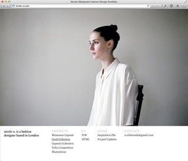
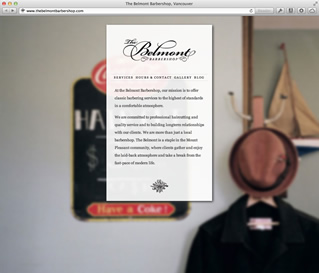
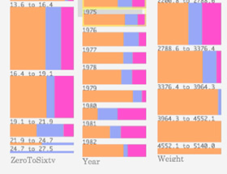
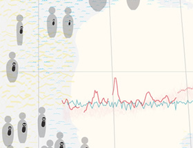

Ivan Zhao
programmer, designer
I'm Ivan Zhao, currently in my mid-20s. In my university years I set my mind on becoming a cognitive scientist, but now I am busying myself creating things on the Internet.
I am interested in programming languages, typography, cartography, science, the history of technology, and basically systems of any sort.
For leisure I like to play basketball, listen to the East Village Radio, or read about art history. At the moment I am inspired by the works of Douglas Engelbart and Alan Kay.
You can follow fragments of my thoughts on Twitter, @ivanzhao. The latest: “Er... something went wrong with Twitter...”, on Unknown Date.
ivan.h.zhao@gmail.com / @ivanhzhao
Based in San Francisco
-
Previously I was working at Inkling, a digital publishing company. I led the design of their cloud-based, content creation framework Habitat.
-
I made an iOS game about knowledge called 3 Degrees of Wikipedia, which challenges you to connect Wikipedia articles via navigating the links. It had been featured by Apple and was the top selling educational game for a while.
-
Having once seriously considered a career in art photography, I still carry a Contax T2 with me all the time. My photos have been published and displayed on many occasions, including the New York Photo Festival & Adbusters.
-


I often design and build websites for my friends. More recent works include a storefront for my barber and a fashion portfolio.
-
In 2010, I co-founded the video storefront service Vittyo, which allowed people to host and sell their videos in standalone websites.
-


During my school years, I worked on various visualization projects. I created the Color Block display, as well as a multi-dimensional map on global warming.
- Last updated on Nov, 2011